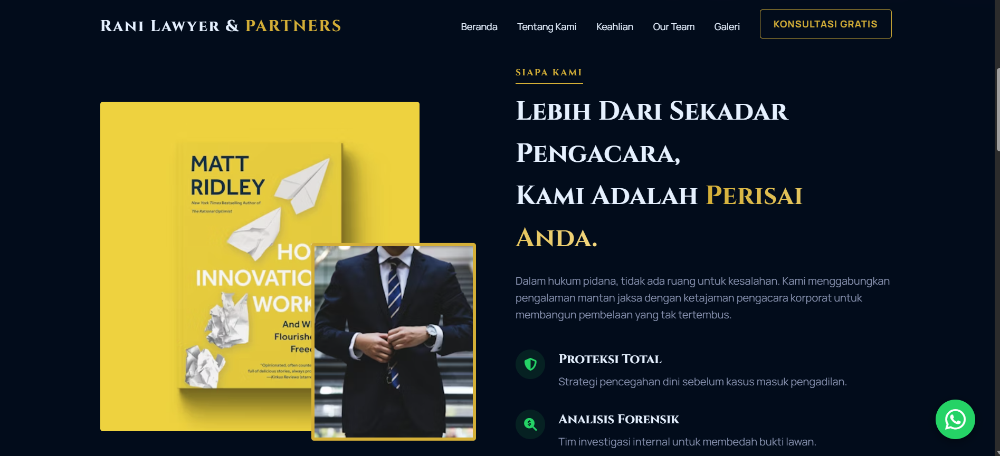
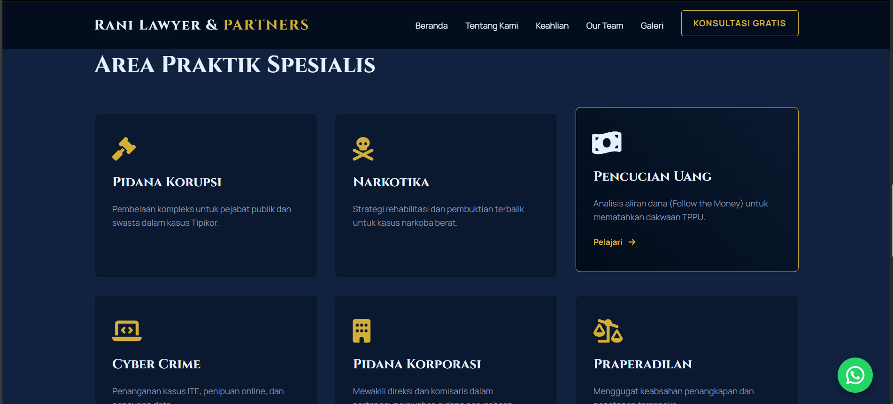

LEGAL & CORPORATE
Magna Law Firm
Membangun kredibilitas digital untuk firma hukum modern dengan desain yang memancarkan otoritas, didukung performa website tingkat enterprise.



Membangun kredibilitas digital untuk firma hukum modern dengan desain yang memancarkan otoritas, didukung performa website tingkat enterprise.


Industri hukum sangat bergantung pada kepercayaan (trust). Website lama klien terlihat sangat kaku, tidak responsif diakses melalui perangkat mobile, dan menyulitkan calon klien untuk menemukan layanan spesifik.
Tantangannya adalah mendigitalisasi citra wibawa firma tersebut ke dalam antarmuka UI/UX modern, serta mengintegrasikan sistem appointment yang aman dan rahasia.
Implementasi desain berprinsip Corporate Minimalist dengan palet warna elegan. Struktur SEO-Friendly dibangun dari nol untuk mendominasi pencarian kata kunci layanan hukum di Google.
Navigasi dirombak total menggunakan konsep 3-Click-Rule, memastikan pengunjung dapat menemukan profil pengacara dan mengirimkan form konsultasi dengan cepat dan terenkripsi.